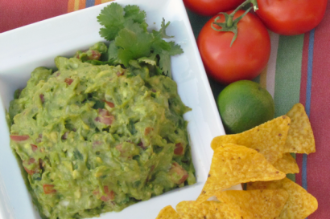

Guacamole is fun. There is no doubt about that. Here are some fun facts
about guacamole! You're welcomee!
- November 14 is National Guacamole Day.

Ingredients!
- 3 Haas avocados, halved, seeded, and peeled please!
- 1 lime, juiced
- 1/2 teaspoon kosher salt
- 1/2 teaspoon ground cumin
- 1/2 teaspoon cayenne
- 1/2 medium onion, diced
- 1/2 jalapeno pepper, seeded and minced
- 2 Roma tomatoes, seeded and diced
- 1 tablespooon chopped cilantro
- 1 clove garlic, minced
Directions!
- Placed the scooped avocado pulp and lime juice in a large bowl, toss to coat.
- Drain, and reserve the lime juice, after all the avocados have been coated.
- Using a potato masher, add the salt, cumin, and cayenne and mash.
- Then, fold in the onions, tomatoes, cilantro, and garlic.
- Add 1 tablespoon of the reserved lime juice.
- Let sit at rooom temperature for 1 hour and then serve.
Some other recipes that are alright...
Here's one!
Click here for an easy one.
Nutrition facts
Serving size 1/3 cup
Serves 8
For myyyy own sutff